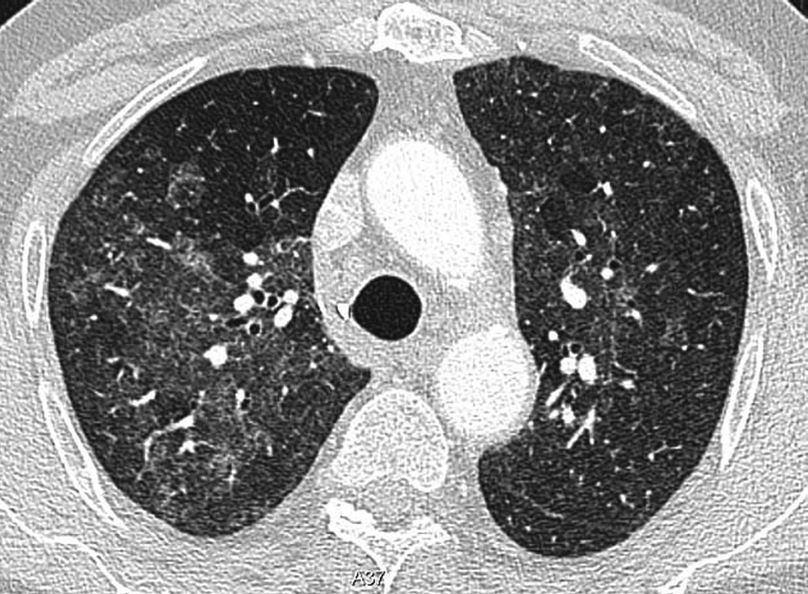

Ficha del catálogo
Neumonía por Pneumocystis jirovecii
- Sistema
- Respiratorio
- Modalidad
- TC
- Región
- Tórax
- Dificultad
- Avanzado
Infección oportunista propia de pacientes con inmunidad celular deprimida, sobre todo en la infección por el virus de la inmunodeficiencia humana con recuento bajo de linfocitos y en receptores de trasplante o de tratamiento inmunosupresor. Cursa con disnea progresiva, tos seca e hipoxemia desproporcionada respecto a los hallazgos radiográficos.
Técnica
Tomografía de tórax de alta resolución sin contraste, indicada incluso con radiografía normal cuando la sospecha clínica es alta.
Qué observar
- Vidrio deslustrado bilateral de distribución perihiliar y en campos medios
- Respeto relativo de la periferia subpleural en las fases iniciales
- Patrón geográfico con áreas afectadas alternando con pulmón sano
- Quistes de pared fina de predominio superior en la evolución
- Riesgo de neumotórax espontáneo por rotura de los quistes
- Escasez de derrame pleural y de adenopatías significativas
Hallazgos
Vidrio deslustrado difuso de predominio central con distribución en mosaico geográfico y quistes aéreos en los casos evolucionados.
Perlas
La discordancia entre una hipoxemia marcada y una radiografía casi normal en un paciente inmunodeprimido obliga a hacer tomografía. El vidrio deslustrado central con quistes y sin derrame es muy sugerente.
Diagnóstico diferencial
- Edema pulmonar
- Líneas septales, derrames y cardiomegalia acompañantes.
- Neumonía por citomegalovirus
- Vidrio deslustrado con nódulos y consolidaciones parcheadas.
- Hemorragia alveolar
- Descenso de la hemoglobina y hemoptisis con resolución rápida.
Simuladores
- Artefacto de vidrio deslustrado por espiración incompleta
- Proteinosis alveolar con empedrado más definido
- Neumonitis por fármacos
Por modalidad
- RX
- Puede ser normal al inicio o mostrar un velado perihiliar sutil
- TC
- Muy sensible, define el patrón y detecta los quistes
Protocolo
Alta resolución en inspiración sin contraste, con ventana pulmonar y revisión de vértices por el riesgo de neumotórax.
Clasificación
Errores frecuentes
- Excluir el diagnóstico ante una radiografía normal
- No avisar del riesgo de neumotórax en el paciente con quistes
- Confundir el vidrio deslustrado infeccioso con sobrecarga hídrica

pneumocystis inmunodeprimido vidrio deslustrado quistes pulmonares oportunista